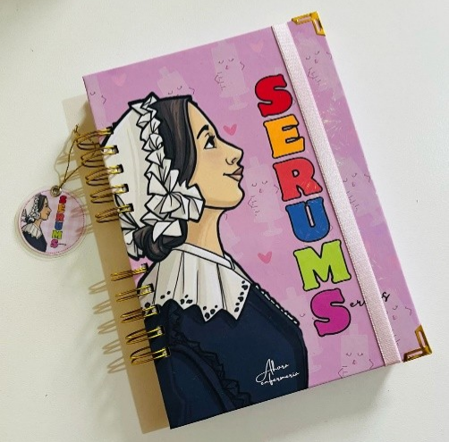

30 páginas con información en general de enfermería + 100 hojas cuadriculadas.
Principalmente para tomar apuntes o anotaciones.
Anillado doble ring.
Tapa dura.
Tamaño A5.

CUADERNO SERUMISTA
S/. 37.00
Cuaderno de apuntes
30 páginas con información útil para el serums, recomendaciones, que llevar al serums, calendario 2025-2026,turnario, entregas de informes, programas a tu cargo, AIS llenado de fua en CRED